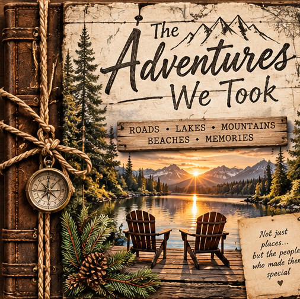

The Adventures We Took
Roads traveled. Places discovered. Memories made. Explore a fictional travel scrapbook celebrating the adventures we share with the people we love.

Cover · 1 of 6
The Adventures We Took
This is a fictional scrapbook demonstration created for TOS Creations. All people and travel memories shown are illustrative.